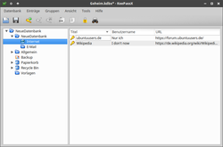
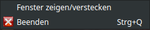
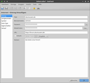
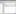
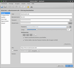

KeePassX
Dieser Artikel wurde für die folgenden Ubuntu-Versionen getestet:
Ubuntu 16.04 Xenial Xerus
Ubuntu 14.04 Trusty Tahr
Zum Verständnis dieses Artikels sind folgende Seiten hilfreich:
KeePassX  ist ein Passwortmanager, der neben Passwörtern auch Benutzerinformationen, Dateien sowie Notizen speichern und verwalten kann. Ein integrierter Passwortgenerator erstellt sichere Passwörter. Die Daten werden nach Kategorien geordnet in einer verschlüsselten Datenbank abgelegt. Somit muss man sich nicht die Passwörter diverser Internetseiten, Foren, Router, E-Mail-Konten etc. merken. Ein Hauptschlüssel regelt den Zugriff auf KeePassX.
ist ein Passwortmanager, der neben Passwörtern auch Benutzerinformationen, Dateien sowie Notizen speichern und verwalten kann. Ein integrierter Passwortgenerator erstellt sichere Passwörter. Die Daten werden nach Kategorien geordnet in einer verschlüsselten Datenbank abgelegt. Somit muss man sich nicht die Passwörter diverser Internetseiten, Foren, Router, E-Mail-Konten etc. merken. Ein Hauptschlüssel regelt den Zugriff auf KeePassX.
Bei KeePassX handelt es sich um eine Software mit Open-Source-Lizenz, die ursprünglich unter dem Namen KeePass/L (L für Linux) als Portierung von KeePass entstand. KeePassX ist auch für Mac OS X und Windows verfügbar.

Die Tatsache, dass verschiedene Plattformen unterstützt werden, hat den Vorteil, dass die Passwort-Datei z.B. auf einem USB-Stick gespeichert und dann auf verschiedenen Rechnern unter verschiedenen Betriebssystemen, also plattformübergreifend genutzt werden kann. KeepassX 2.x Datenbanken sind kompatibel mit denen von KeePass 2.x (.kdbx). KeePassX bietet eine Unterstützung zu älteren .kdb Datenbanken die importiert werden können.
Installation¶
KeePassX ist in den offiziellen Paketquellen enthalten. Installiert [1] wird das Programm mit folgendem Paket:
keepassx (universe)
 mit apturl
mit apturl
Paketliste zum Kopieren:
sudo apt-get install keepassx
sudo aptitude install keepassx
Ab Ubuntu 16.04 wird die Version 2.x installiert. Diese Version wird hier in diesem Artikel besprochen. Die ältere Version 0.4.x wird in einem anderen Unterartikel besprochen. Diese Version hatte noch anfangs Einzug in Ubuntu 14.04 gefunden wurde aber später durch die neuere Version 2.x abgelöst.
Fremdpaket¶
Von KeePassX 2.x. existieren Fremdpakete  , die heruntergeladen und manuell installiert [2] werden müssen.
, die heruntergeladen und manuell installiert [2] werden müssen.
Hinweis!
Fremdpakete können das System gefährden.
Konfiguration¶
Es wird ein Eintrag im Anwendungs-Menü unter "Zubehör -> KeePassX" angelegt. Über "Tools -> Einstellungen" können einzelne Programmteile konfiguriert werden. KeePassX speichert die Konfiguration im versteckten Homeverzeichnis in der Datei ~/.config/keepassx/keepassx2.ini ab.
Sicherheit¶
Allgemein¶
Unter "Tools -> Einstellungen -> Sicherheit" kann festgelegt werden, wie lange Daten in der Zwischenablage gehalten werden oder wann der Arbeitsbereich bzw. die Datenbank gesperrt wird. Auch kann dort eingestellt werden ob Passwörter in Klartext oder als Sternchen dargestellt werden.
Unter "Tools -> Einstellungen -> Allgemein" kann zusätzlich eingestellt werden Ob, Wie und Wann die Datenbank nach Veränderungen gespeichert werden soll.
Autotype¶
Man kann mit Auto-Type festlegen, die Logins im Browser durch KeePass automatisch ausführen zu lassen. Über einen  Rechtsklick und "Eintrag anzeigen/bearbeiten -> Auto-Type" ist diese Funktion bei den einzelnen Konten definierbar. Außerdem ist es möglich, bei einer geöffneten Webseite mit einem Anmeldeformular die Datenbank nach passenden Einträgen mit einem globalen Kurzbefehl durchsuchen zu lassen. Existiert ein passender Eintrag, wird Autotype automatisch ausgeführt. Vorausgesetzt ist, dass das Feld "Titel" des KeePassX-Eintrages und der Fenstertitel der Website im Browser übereinstimmen.
Rechtsklick und "Eintrag anzeigen/bearbeiten -> Auto-Type" ist diese Funktion bei den einzelnen Konten definierbar. Außerdem ist es möglich, bei einer geöffneten Webseite mit einem Anmeldeformular die Datenbank nach passenden Einträgen mit einem globalen Kurzbefehl durchsuchen zu lassen. Existiert ein passender Eintrag, wird Autotype automatisch ausgeführt. Vorausgesetzt ist, dass das Feld "Titel" des KeePassX-Eintrages und der Fenstertitel der Website im Browser übereinstimmen.
Die einfachste Variante ohne sich mit den ganzen Einstellungen auseinandersetzen zu müssen ist es bei geöffneter Webseite im Browser bei KeePassX auf die Schaltfläche "Auto-Type ausführen" zu klicken, die unter "Einträge -> Auto-Type ausführen" zu finden ist. Dabei ist zu beachten das der Cursor im Anmeldeformular der Website im Feld Benutzername steht.
Der globale Kurzbefehl für Autotype lässt sich unter "Tools -> Einstellungen -> Allgemein" festlegen.
Problembehebung Autotype¶
Bei Passwörter mit Sonderzeichen kann es bei der Verwendung der Auto-Type Funktion zu Problemen kommen. Abhilfe ist im Blogbeitrag Auto-Type-Funktion von KeePass unter Gnome verwenden  (01/2014) beschrieben, nämlich der folgende Eintrag in Autostart
(01/2014) beschrieben, nämlich der folgende Eintrag in Autostart
bash -c "setxkbmap de"

Systemtray¶
Unter "Tools -> Einstellungen -> Allgemein" kann eingestellt werden, ob ein Symbol in der Leiste angezeigt werden soll sowie das Verhalten. Ein  Linksklick auf dieses bringt das Programm in den Hinter- bzw. Vordergrund. Ein Rechtsklick öffnet ein weiteres Menü. Hier kann der Arbeitsbereich angezeigt/versteckt oder das Programm beendet werden.
Linksklick auf dieses bringt das Programm in den Hinter- bzw. Vordergrund. Ein Rechtsklick öffnet ein weiteres Menü. Hier kann der Arbeitsbereich angezeigt/versteckt oder das Programm beendet werden.
Bedienung¶
Werkzeugleiste¶
Die Grundfunktionen von KeePassX sind über die Werkzeugleiste zu erreichen:
| Werkzeugleiste | ||
| Symbol | Name | Beschreibung |
| "Neue Datenbank" | Eine neue Datenbank wird erstellt. | |
| "Datenbank öffnen" | Eine bereits existierende Datenbank öffnen. Zum automatischen Öffnen Einstellungen ändern. | |
| "Datenbank speichern" | Datenbank wird gespeichert. | |
| "Neuen Eintrag hinzufügen" | Datensatz oder Gruppe neu erstellen. | |
| "Eintrag anzeigen/bearbeiten" | Datensatz anzeigen oder Veränderungen vornehmen. | |
| "Eintrag löschen" | Datensatz wird entfernt. | |
| "Benutzernamen in die Zwischenablage kopieren" | Der Benutzername wird zur weiteren Verwendung kopiert. | |
| "Passwort in die Zwischenablage kopieren" | Das Passwort wird zur weiteren Verwendung kopiert. | |
| "Arbeitsbereich sperren" | Das Programm wird gesperrt. Hauptschlüssel wird zum Entsperren benötigt. | |
| "Suche" | Hier kann nach Titelnamen gesucht werden bei sehr großen Datenbanken. | |
Alle Menüpunkte sind im jeweiligen Fensterbereich über einen Rechtsklick ebenfalls erreichbar.
Datenbank¶
Eine vorhandene "Datenbank öffnen" bzw. importieren. Sofern keine Datenbank vorhanden ist, ist diese mit "Neue Datenbank" zu erstellen. Diese wird beim ersten Speichern unter dem angegebenen Namen als KeePass-Datenbank (.kdbx) angelegt.
Passwort¶
Der Hauptschlüssel sollte sicher gewählt sein, da ein unsicheres Passwort Tür und Tor öffnet. Dieses sollte einfach zu merken sein, aber trotzdem ein Höchstmaß an Sicherheit mit sich bringen [3].
Im Nachhinein kann dieses unter "Datenbank -> Hauptschlüssel ändern" geändert und eine Schlüsseldatei hinzugefügt bzw. entfernt werden.
Schlüsseldatei¶
Für eine höhere Sicherheit sorgt die Verwendung einer Schlüsseldatei (.key), welche bei der Datenbankerstellung angelegt werden kann. Es ist ebenfalls möglich Dateien anderer Formate zu wählen. Bei jedem weiteren Öffnen der Datenbank ist diese Schlüsseldatei erforderlich.

Gruppen¶
Zur besseren Übersicht können weitere Gruppen, neben "Internet" und "eMail", eingerichtet werden. Dies kann über "Gruppen -> Neue Gruppe hinzufügen" erreicht werden. Nach Eingabe eines aussagekräftigen Titels, z. B. "WLAN", ggf. noch ein eigenes Gruppensymbol zuweisen. Mit "OK" wird die neue Gruppe erstellt. Um Gruppen zu löschen oder zu bearbeiten einen Rechtsklick auf die gewünschte Gruppe ausführen und die Operation auswählen.
Eintrag¶
Um einen Eintrag vorzunehmen wählt man die gewünschte Gruppe im linken Fensterbereich, durch einen Linksklick, aus. Im rechten Fenster einen Rechtsklick ausführen und  "Neuen Eintrag hinzufügen" auswählen. Die erforderlichen Daten eingeben, ggf. ein Symbol zuordnen und mit "OK" übernehmen. Einzelne Dateien können ebenfalls aufgenommen und Einträge nachträglich bearbeitet/gelöscht werden. Ein Passwortgenerator hilft beim Erstellen von Passwörtern.

Passwortgenerator¶
Diese Funktion ist über das Erstellen eines neuen Eintrages oder bei einen schon vorhandenen Eintrag über ein Rechtsklick "Eintrag anzeigen/bearbeiten" zu erreichen. Passwörter verschiedenster Stärke und Länge können zufällig erzeugt werden. Dabei kann man auch angeben, aus welchen Zeichenkombinationen (z. B. nur Buchstaben, Buchstaben und Zahlen, Sonderzeichen usw.) das Passwort bestehen soll.
Zwischenablage¶
Benutzernamen und Passwörter können zur weiteren Verwendung in die Zwischenablage kopiert werden. Je nach Sicherheitseinstellung werden diese nach kurzer Zeit aus dieser gelöscht. Zu erreichen ist die Funktion über einen Rechtsklick oder die Werkzeugleiste.
Import/Export¶
KeePassX kann unter verschiedenen Betriebssystemen genutzt werden. Es beherrscht den Import der Formate: KeePassX (.xml), KWallet (.xml) und PwManagerfile (.pwm). Als Exportformat steht (.csv) zur Verfügung. Die Punkte sind über "Datenbank -> KeePass 1 Datenbank importieren" bzw. "Datenbank -> als CSV Datei exportieren" zu erreichen.
Portabilität¶
Um die Passwörter auch unterwegs verfügbar zu haben, kann alternativ auch die Windows-Version von KeePassX auf einem USB-Stick entpackt werden. Eine weitere Installation ist nicht nötig und KeepassX kann nun sowohl unter Linux als auch unter Windows benutzt werden. Die in KeepassX erstellte Datenbank (.kdbx) kann dann einfach zusätzlich auf den Stick kopiert werden und fortan unter Windows und Linux verwendet werden. So kann jeweils die entsprechende KeePassX-Version benutzt werden. Alternativ ist es auch möglich mit der Portable Version von KeePass (ohne X) zu arbeiten. Wenn man KeepassX das erste Mal von dem Stick startet, findet das Programm die Datenbank natürlich nicht automatisch, weswegen der Pfad zur Datenbank einmal angegeben werden muss.
Hinweis:
Der Rückgriff auf die originäre Windows-Version KeePass (ohne X) führt im Gegensatz zu früheren Kombinationen dieser Art nur dann zum Erfolg, wenn das Paket mono-runtime installiert ist.
Die Datenbankdateien sind auch kompatibel zu verschiedenen Android-Apps die .kdb und .kdbx Datenbanken unterstützen. Die von der Linux-Version von KeePassX erstellte .kdbx-Datei kann man einfach auf das Android-Smartphone kopieren, den Pfad zur Datenbank angeben und starten. Nach Eingabe der Passphrase (und je nach Leistungsfähigkeit des Smartphones) erscheint früher oder später eine Liste mit den Gruppen, die zu den einzelnen Einträgen und Inhalten führt.
CSV-Datei¶
Die Ausgabe in der CSV-Datei gliedert sich nach dem folgenden Muster:
| CSV | |||||
| Group | Title | Username | Password | URL | Notes |
| Internet | ubuntuusers.de | Nickname | ganzdollgeheim | https://ubuntuusers.de/ | Meine liebste Webseite |
| usw. | usw. | usw. | usw. | usw. | usw. |
Tastenkürzel¶
| Tastenkürzel | |
| Taste(n) | Bedeutung |
| Strg + O | Datenbank öffnen |
| Strg + S | Datenbank speichern |
| Strg + W | Datenbank schließen |
| Strg + Q | Beenden |
| Strg + N | Neue Datenbank hinzufügen |
| Strg + K | Datenbank klonen |
| Strg + E | Datenbank anzeigen/bearbeiten |
| Strg + D | Eintrag löschen |
| Strg + B | Benutzername kopieren |
| Strg + C | Passwort kopieren |
| Strg + V | Auto-Type ausführen |
| Strg + U | URL öffnen |
| Strg + Alt + U | URL in Zwischenablage kopieren |
| Strg + F | Suchen |
| Strg + L | Datenbank sperren |
Links¶
KeePassX
- offizielle KeePassX HomepageKeePassXC: KeePass Cross-Platform Community Edition
- aktiver Fork mit zusätzlichen FunktionenKeeWeb
- Browser-basiertes Pendant mit optionaler Cloud-AnbindungKeePass Password Safe
- ursprüngliches KeePass-Projekt mit Fokus auf und Abhängigkeit von Windows bzw. Monoinoffizielle KeePass Ports
- Liste von nativen Clients für diverse Plattformen
lastpass2keepass
- Datenkonvertierungsskript von Lastpass zu KeePassX
- Erstellt mit Inyoka
-
 2004 – 2017 ubuntuusers.de • Einige Rechte vorbehalten
2004 – 2017 ubuntuusers.de • Einige Rechte vorbehalten
Lizenz • Kontakt • Datenschutz • Impressum • Serverstatus -
Serverhousing gespendet von